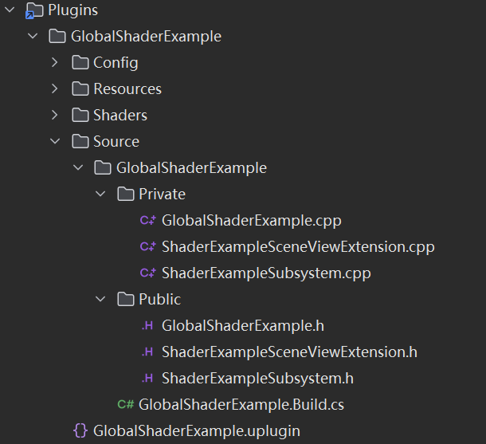
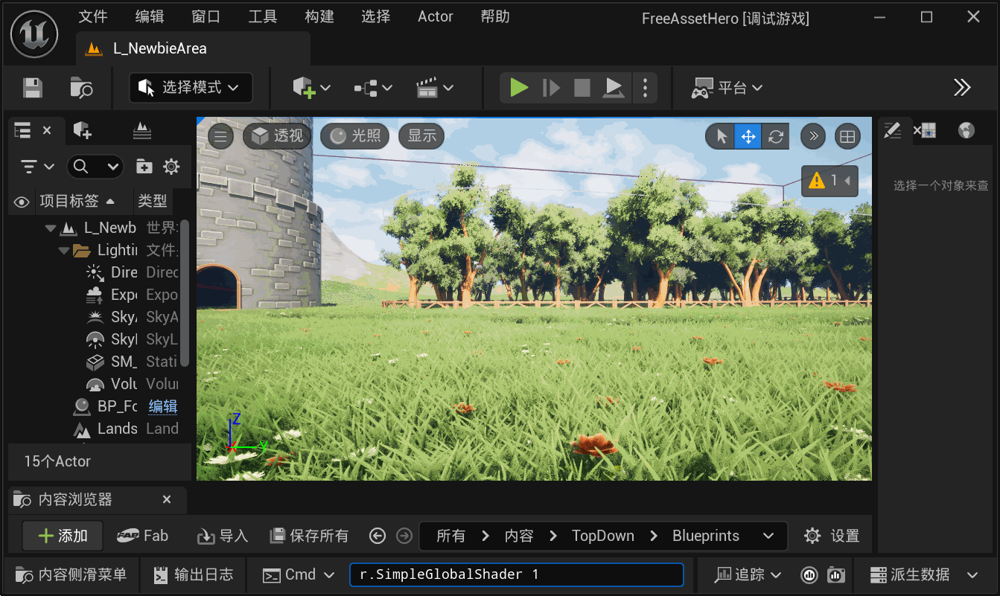

虚幻引擎的Shader课堂之Global Shader
前言
在上一篇关于虚幻引擎SceneViewExtension的介绍里面简单的提到了一些关于UE中的Shader的一些介绍。由于那篇文章的重点是关于SceneViewExtensionTemplate的，所以并没有将Shader这部分内容展开和整理起来。
现在回想起来，觉得如果需要对UE的渲染流程做自定义的话，弄清楚UE的不同的shader的类型，以及各自的用法还是非常有必要的，因此打算开一个系列的文章，讲讲虚幻引擎的Shader。
相比较Unity对自定义shader的开发，UE从设计上其实更鼓励使用者通过可视化节点工具来实现自定义的渲染效果，可能和UE设计上的目标人群很多是设计师和影视行业从业者等非技术人员有关。因此，在UE中实现自定义Shader开发确实存在一定门槛，不过只要稍微了解核心逻辑并辅以实践，依然是可行的。也希望这个系列内容能为读者提供具体的思路与帮助，让复杂的技术变得更易上手。
第一篇，我会先介绍一下Global Shader。
Global Shader是什么
Global Shader是UE中一类不依赖具体材质或游戏对象的着色器，它可以用来处理全局场景相关的渲染逻辑。与依赖材质属性的Material Shader不同，Global Shader的逻辑始终围绕整个场景展开。
由于它的这个特点，所以Global Shader的应用范围非常广泛，包括：
- 全场景的效果，如场景雾效
- 后处理效果，如模糊、颜色filter等等（当然后处理也可以通过后处理材质shader来实现）
- Compute Shader（这个后面会单独讲一期）
- 等等
所以总而言之，只要需要达到的效果不依赖于具体的材质属性，那么大概率都可以通过global shader来实现。
一个简单的Global Shader例子
好了，接下来我们来创建一个简单的Global Shader，并让它在UE中跑起来。通过跑通这个简单的例子，相信大家也能对Global Shader有一个大概的了解。
准备工作
为了表现出我们将要创建的Global Shader的效果，参照前面SceneViewExtension的文章，采用SceneViewExtension的方法来插入我们的渲染修改，简单做一些准备工作：
- 新建一个插件
- 在插件内新建一个UEngineSubsystem的子类，和一个FSceneViewExtensionBase的子类。
- 在Subsystem中处理SceneViewExtension的初始化和销毁
- 在插件Module类中的StartupModule将添加虚拟Shader路径。
- 创建Shaders目录
准备工作都做完后，我们的目录看起来大概是这个样子的：

创建GlobalShader类
接下来我们创建Global Shader类。
1 |
|
在上面这段代码中，FSamplerGlobalShader是我们自定义的Global Shader类，这个类中包含几个最基本的部分：
-
DECLARE_GLOBAL_SHADER：在类中声明一个全局着色器类型，生成必要的元数据，包括类型标识符、序列化信息得到，让引擎能够识别、编译和管理这个shader。
- 它等价于DECLARE_SHADER_TYPE(FSampleGlobalShader, Global)。
- 如果需要shader跨模块可见，需要对应的使用DECLARE_EXPORTED_GLOBAL_SHADER或者DECLARE_EXPORTED_SHADER_TYPE
-
SHADER_USE_PARAMETER_STRUCT:将GlobalShader和参数结构体绑定起来，确保引擎可以正确处理参数传递。
-
BEGIN/END_SHADER_PARAMETER_STRUCT:这段代码是用于定义shader所需参数的结构。
- SHADER_PARAMETER：申明一个float3类型的输入，名称为TargetColor。参照这种写法我们可以传入各种不同的参数，如float、int等等
- SHADER_PARAMETER_RDG_TEXTURE：声明一个与RDG兼容的2D纹理参数SceneColorTexture，使用这个MARCO可以确保纹理资源在RDG中被正确的跟踪依赖关系。我们可以参照这个例子将更多的纹理传入shader
- SHADER_PARAMETER_STRUCT_INCLUDE：如注释所说，这里我们包含了另外一个预定义的参数结构体，UE包含很多的预定义结构体，可以适当应用避免重复定义。当前这个结构体包括：
- SceneDepthTexture：场景深度纹理（用于获取像素的世界位置）；
- SceneNormalsTexture：场景法线纹理（用于区分表面朝向）；
- SceneVelocityTexture：场景运动向量纹理（用于动态物体检测）。
- RENDER_TARGET_BINDING_SLOTS：申明这个shader动态绑定的渲染输出目标。
好了，这就是一个非常简单的Global Shader的样子了。我们再来回顾一下，这个基本的GlobalShader类的几个部分：
- 声明Global Shader，自动生成必要的元数据；
- 将Global Shader和参数结构体绑定起来；
- 申明Global Shader的参数结构体
接下来，我们需要注册我们的shader，将C++类和HLSL文件以及文件中的入口函数绑定。
1 | IMPLEMENT_GLOBAL_SHADER(FSampleGlobalShader, "/Plugins/GlobalShaderExample/SamplePS.usf", "MainPS", SF_Pixel); |
如上面的代码所示，我们将HLSL文件以及入口函数绑定到了我们声明的Global Shader类，并且申明该Shader的阶段是Pixel Shader。
通过SceneViewExtension使Global Shader生效
接下来我们要将shader通过SceneViewExtension对UE的渲染做出改变。
这里我们选择重写SceneViewExtension的PrePostProcessPass_RenderThread方法，这个方法会在UE进行后处理之前被调用。
1 |
|
这段执行的代码也是相对来说比较简单易懂的，大体分为3个部分：
- 准备需要传入给shader结构体的参数；
- 将输入输出参数绑定到shader的结构体上；
- 将执行shader的指令添加到RDG上，通过RDG确保依赖关系正确，最终调用渲染指令。
一个简单的示例Shader
最后，这里贴一个对应上面我们定义的Global Shader类的shader代码。UE的Shader执行内容都放在**usf（unreal shading file）类型的文件中，很多公共定义、函数声明、结构体等复用的代码放在ush（unreal shading header）**类型的文件里面。
1 | // 一个简单的色彩滤镜shader |
这是一个非常简单的色彩滤镜的shader代码，我们添加一个控制指令来开启和关闭SceneViewExtension的效果，看看最终的结果吧。

结语
好了，UE的global shader就先简单介绍到这里了。Global Shader 的应用非常广泛，目前这个例子只能是作为一个简单的入门，带大家了解一下这个过程。万事开头难，希望这个例子能对各位有所帮助。
参考资料
https://dev.epicgames.com/documentation/zh-cn/unreal-engine/adding-global-shaders-to-unreal-engine